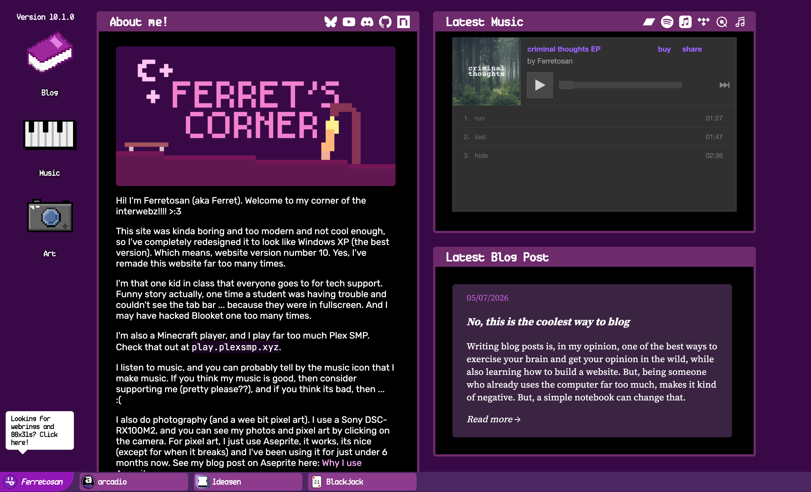
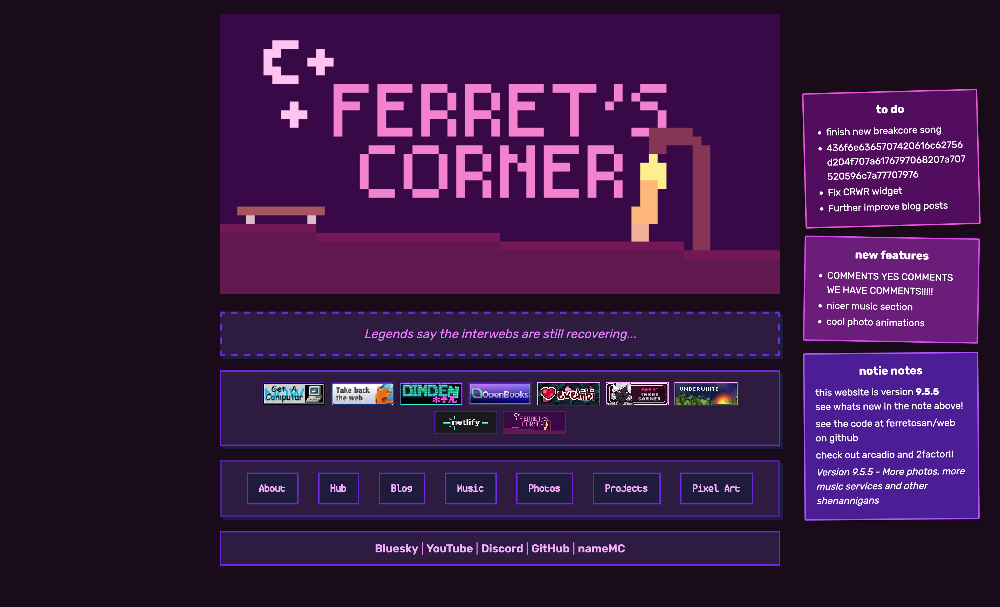
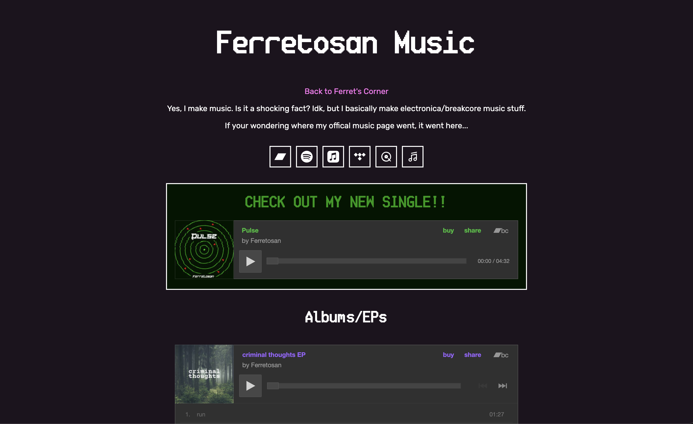

If you're looking at my website right now, you'd probably either be wondering why my main page looks ... familiar or why my blog page looks ... modern? classic? Well, we'll find out.

The First Flaw
I've always wanted to be able to be a source for information, offering opinion on the front page of Google. But, by loading the blog posts as simple overlays with JavaScript, that was simply not possible.
This also meant I couldn't use fancy comments, easily. You may have read my previous post, where I set up comments via Utterances, and at the end I said, "I might switch to Guscus, but that seems hard". Well, I can now switch! Because each post is going to have its own individual URL, and won't be loaded via JavaScript, it means all of the blog problems are basically fixed.
But why a complete redesign?
Well, I'm going to be 100% honest. My old layout was vibe-coded, like not completely, but that was a big part of the development process. This meant I had no ability to make major (or minor tbh) updates easily. I relied on AI to make my website function.

This wasn't the only reason, however. I've been getting tired of how generic it was looking, and how annoying it was to scroll down to everything. I didn't actually intend for a Windows Xp style, even. I actually just wanted some icons on the left for my main three things, and to have a bar at the bottom for my side-projects. (Yea, I renamed it from "The Hub")
Quickly I realised how similar this style looked to Windows XP, so I went all-in. At the time of writing this post, I still haven't even finished the main page (or started the blog at all). My ideas are simply too unfathomable.
Why a different style for the blog?
Well, remembed what I said earlier this post (I hope you do, otherwise you have zero attention span)? "I want my opinion on the front page of Google" or some crap. But I didn't only want to have my blogposts nicely organised on Gooogle, I wanted to have a beautiful, neat collection of all my blog posts.
On the day of writing this post, I've actually came up with the design for the wordmark, which you can probably see somewhere on the screen. Basically, the point is that I want my blog posts to be on a beautiful, readable website experience.
The art and music websites
You probably are wondering about my art (digital art, photos and pixel art) and music pages. How would I organise those. The answer is simple. I would just experiment. As of writing this post, I have tons of creative ideas running through my veins. My idea for the music page is kinda simple, just having the Bandcamp emebeds stacked in a collumn.

My idea for the art page is actually kinda cool. I plan to have the images floating around in the background, with the sections of art in nice bento grid, with the sections on a sidebar on the left.
Conclusion
Anyways, thanks for listening to/reading my yap.
じゃね!
(Cya!)
Comments